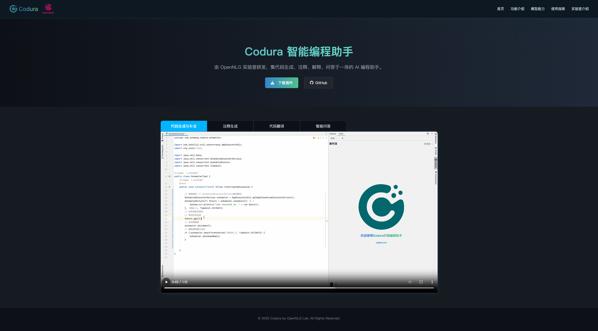

PROBLEM
开发者需要
留在工作流里
通用聊天界面脱离 IDE 上下文，代码补全、报错分析与知识问答需要频繁切换，难以形成自然的研发辅助体验。
02 · DEVELOPER TOOL
将大模型能力嵌入 IntelliJ IDEA，面向日常开发提供代码补全、问答、诊断与修复建议，降低研发人员获取与使用模型能力的门槛。
访问 Codura 独立项目站点 ↗
PROBLEM
通用聊天界面脱离 IDE 上下文，代码补全、报错分析与知识问答需要频繁切换，难以形成自然的研发辅助体验。
METHOD
在 IntelliJ 插件中接入代码上下文，采用 OpenAI 兼容 SSE 流式接口承载模型输出；后台以 Spring Boot、MyBatis-Plus 提供账户、会话与配置能力。
RESULT
形成可在 IDE 内直接使用的 AI 编程助手，项目服务于 400+ 员工；代码补全、自然语言问答和异常诊断在一个工作台中完成。
IN-IDE EXPERIENCE
在 IntelliJ 工作台中完成代码辅助、自然语言问答与异常诊断，让模型能力留在开发者原本的工作流里。


TECHNOLOGY
客户端Java 17 · IntelliJ Platform SDK · Gradle
服务端Java · Spring Boot · SSE · OpenAI-compatible API
前端、数据与部署Vue 2 · MySQL · Redis · MyBatis-Plus · Docker